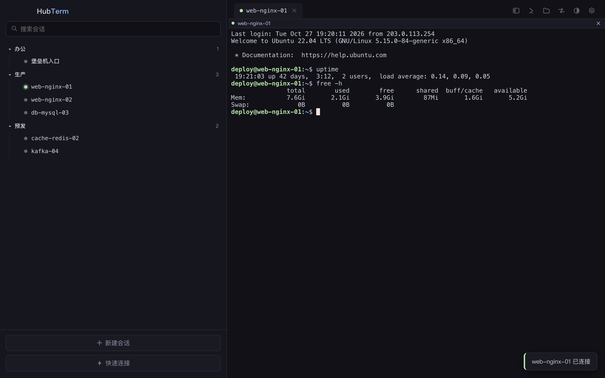
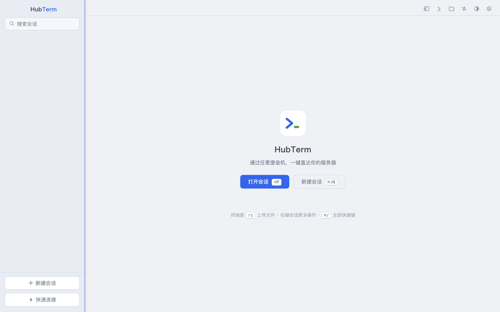

菜单式堡垒机自动应答、ZMODEM / SFTP、端口转发、AI Agent 安全接入——所有自动化都是你可见、可编辑的登录规则，没有黑盒。
One-click SSH through any bastion host. A modern, open-source SecureCRT alternative.

对标 SecureCRT 的完整工作流：会话管理、自动登录、文件传输、隧道转发，全部本地化存储，零云端依赖。
每会话的 expect→send 登录规则（兼容 SecureCRT Logon Actions），支持 $PASSWORD / $TARGET 变量、登录后命令、MFA 弹窗。规则之外立刻交还键盘。
多级文件夹、拖拽整理、状态点实时可见；⌘P 模糊搜索直达任意会话；标签页拖拽排序、批量关闭、重启恢复。
rz / sz 直接收发文件，带进度面板与取消按钮；内置 lrzsz 互操作补丁，与任何 lrzsz 环境无缝配合，且不受登录规则影响。
直连会话即可浏览远端目录：拖拽上传、下载、重命名、删除；传输随时可取消，断线重连后抽屉自动重绑。
转发规则按会话保存——透过堡垒机直达内网 Web、数据库。ProxyJump 标准协议，可串联另一会话作跳板。
常用命令沉淀为代码片段，一键广播到所有已连接窗格同时执行——几十台机器同时看日志、发版、回滚。
密码经系统钥匙串加密存储；known_hosts 指纹钉扎，主机密钥变更立刻告警；支持密码 / 私钥（含口令）/ SSH Agent。
自动 / 浅色 / 深色跟随系统；Catppuccin Mocha & Latte、Solarized Light 等终端配色，切换界面主题时已开标签实时跟随。
SecureCRT 一键迁移：逐会话解密还原原始 Logon Actions；支持 ~/.ssh/config 导入、JSON 全量备份与恢复。
国内公司的现实：落地是 Opt> 菜单，选主机、选用户，可能还有 MFA。SecureCRT 用登录脚本解决，收 $99；Termius / Tabby 干脆做不了。
# 每条规则：终端出现… 就应答… Expect: Opt> Send: 3 Expect: login: Send: $TARGET Expect: Password: Send: $PASSWORD # 登录后命令（可选） Post: sudo -i # 出现规则之外的提示？ # → 自动化停手，终端交还给你。
内置 MCP Server（官方 SDK，streamable HTTP）：Claude Code、Cursor、ZCode 等 Agent 可以列出你的主机、在授权会话上执行命令——拿到的是结构化的 stdout / stderr / 退出码，而不是一个处理不了 MFA 的裸 ssh。
{ "mcpServers": { "hubterm": { "url": "http://127.0.0.1:<port>/mcp", "headers": { "Authorization": "Bearer <token>" } } } } # hubterm_list_hosts → 主机清单（含 automatable 标记） # hubterm_exec → 单命令执行，返回退出码
| HubTerm | SecureCRT | Termius | Tabby / WindTerm | |
|---|---|---|---|---|
| 菜单式堡垒机 + MFA | ✅ 规则可读 | ✅ 登录脚本（$99） | ❌ | ❌ |
| 自动化透明可编辑 | ✅ 每会话规则 | ⚠️ 脚本不透明 | — | — |
| ZMODEM rz/sz | ✅ | ✅ | ❌ | ⚠️ |
| SFTP + 端口转发 | ✅ | ✅ | ⚠️ 付费档 | ✅ |
| AI Agent 接入（MCP） | ✅ 内置可审计 | ❌ | ❌ | ❌ |
| 价格 | 免费 · MIT | $99+ | 订阅 | 免费 |
纯 JS 技术栈（ssh2 + xterm.js + zmodem.js，无原生模块），macOS（arm64 / x64）与 Windows x64 开箱即构建，80+ 离线测试保障。
# macOS（跟随本机架构，构建完自动装进 /Applications） git clone https://github.com/thislyc/hubterm.git cd hubterm && npm install npm test # 80+ 离线测试（mock SSH + 真实 lrzsz + MCP） npm run package # 或 package:intel / package:win
